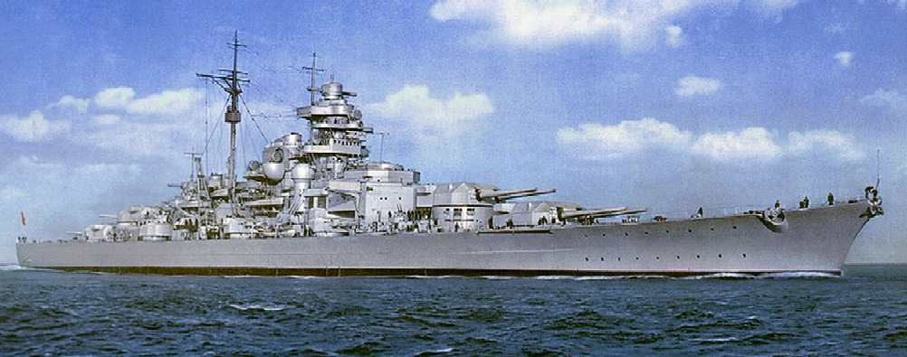

Monthly News Report
A new Giant is born
Wilhelmshaven, Germany, September 1937
Germany has unveiled & commissioned it's latest battleship called the Bismarck at it's construction Port in Wilhelmshaven today by the German High Chancellor himself.
The Bismarck is one of the largest and most powerful battleship ever built in the European theater, with a displacement of 50,000 tons and armed with eight 15-inch guns.
The ship is named after the German Chancellor Otto von Bismarck, who was instrumental in the unification of Germany in the 19th century. The Bismarck is expected to be a formidable
addition to the German navy and will play a key role in Germany's naval strategy in the coming years. With his brother ship the Tirpitz also under construction, Germany is rapidly
expanding its naval capabilities becoming a big Naval Player in the Atlantic. Chancellor Hitler has stated at the event:
"that the Bismarck will be a symbol of German strength and power, and will serve as a deterrent to any potential adversaries. Germany is committed to building a strong and modern navy,
and the Bismarck is a testament to that commitment. We will continue to invest in our naval capabilities to ensure that we can defend our interests and protect our people."

Anschluss!!!
Vienna, Austria, September 1937
In a stunning development, Germany has successfully annexed Austria in a move that has sent shockwaves through the international community. The annexation, which was carried out without any significant resistance from Austrian forces,
has been met with widespread condemnation from other nations. However with a democratic vote of 90% in favor of the annexation, the move has been hailed as a triumph for German nationalism and a significant step towards the unification
of all German-speaking peoples. The annexation has also raised concerns about Germany's intentions in the region and has led to increased tensions between Germany and its neighbors especially coupled with the invasion of Belgium.
The Lion Roars
Riyadh - Saudi Arabia – September 1937
After the surprise attack by the Saudi Arabian army on one of the British secondary divisions which garnered them great success & inflicted heavy casualties on the British invasion force, however the British have been quick to
retaliate and have launched a counter attack on the Saudi Arabian forces in the region.
The British forces, which are well-equipped and highly trained, have been able to rout most of the Saudi Arabian forces and regain control of the area. They are now currently hunting the remaining Saudi Arabian forces in the
mountainous regions in the country and are determined to prevent any further attacks on British interests. The situation is still developing, and it remains to be seen how the conflict will unfold in the coming days and weeks.